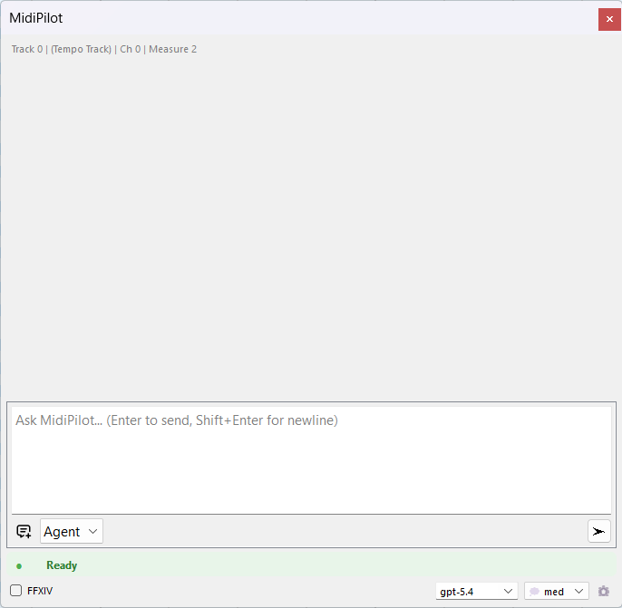
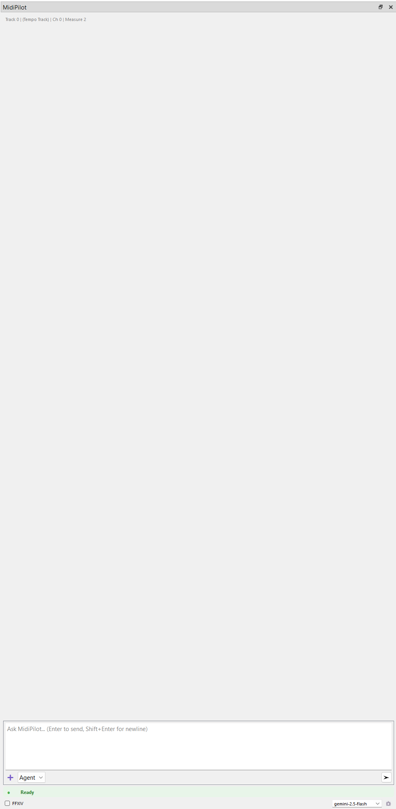
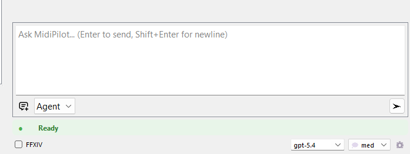
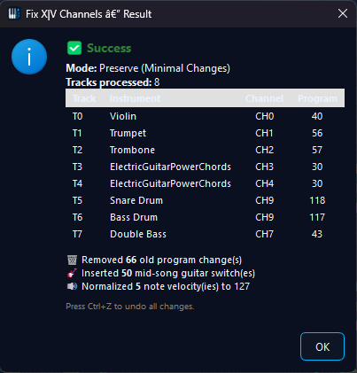
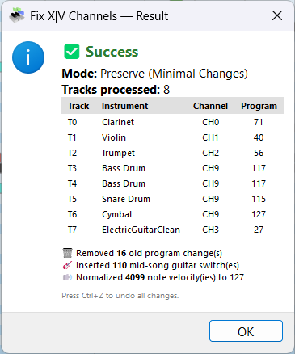
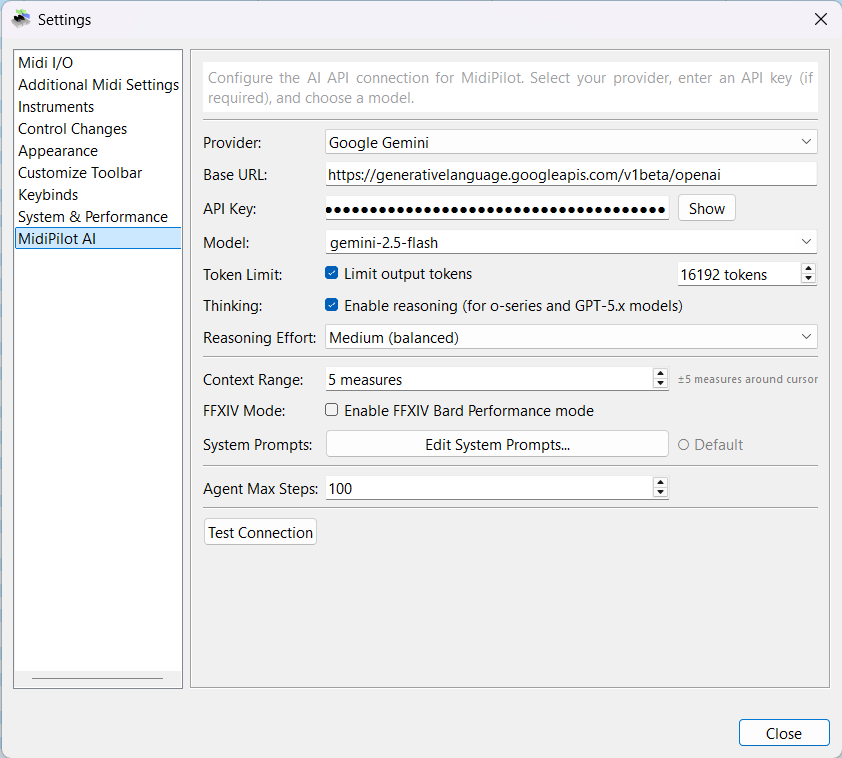
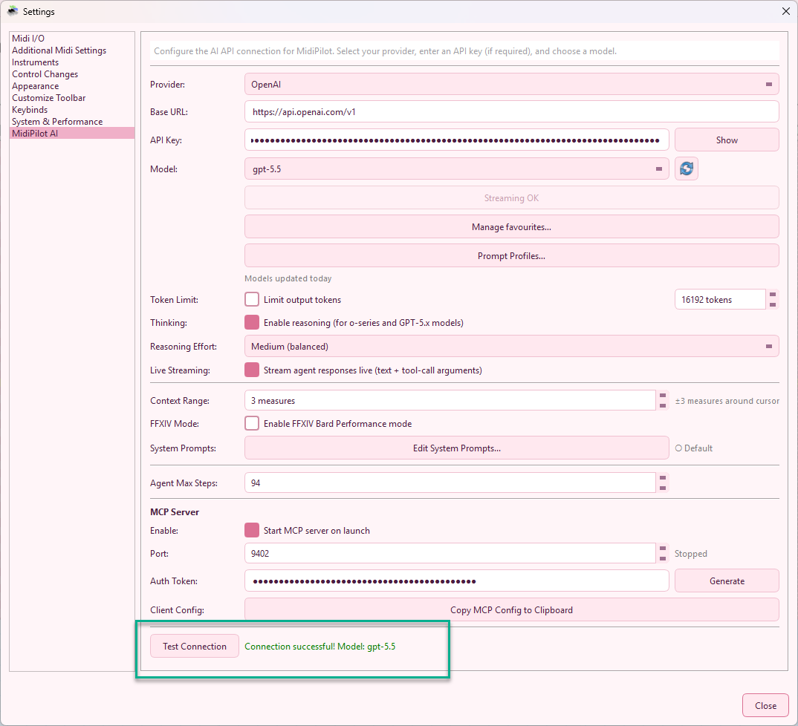
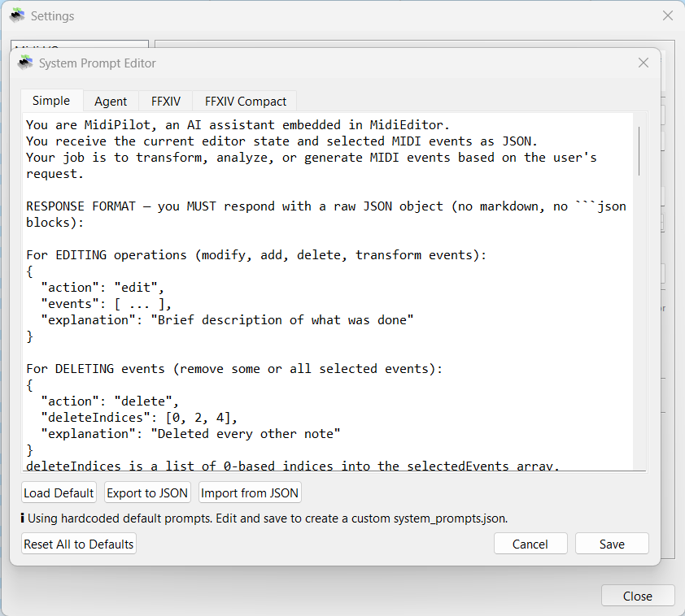
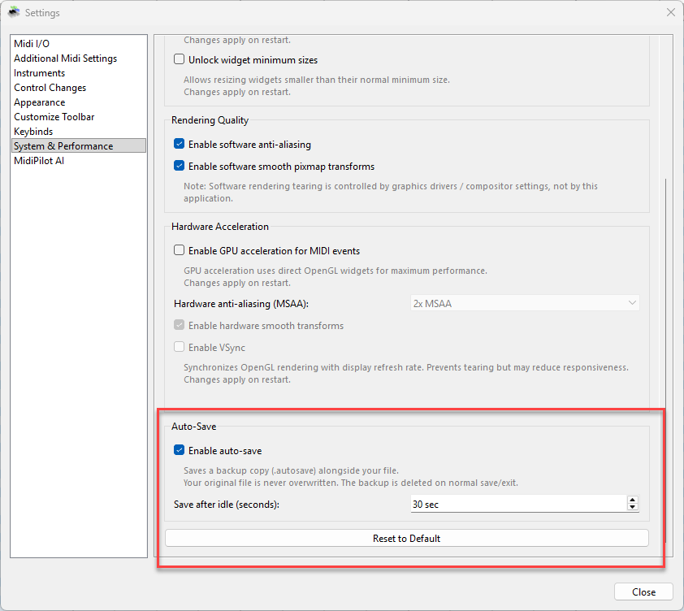

MidiPilot Agent mode composing a full arrangement from a single prompt
MidiPilot is the AI brain embedded directly in MidiEditor AI. Open the sidebar panel, type what you want in plain English, and watch it compose, edit, transform, and analyze your MIDI data automatically.
Multi-step agentic loop — the AI calls tools iteratively, inspecting results between steps to build complex compositions from a single prompt.
Learn more →Single request/response for quick edits, small transformations, and focused tasks without the overhead of multi-step planning.
Learn more →Enforces Final Fantasy XIV Performance constraints — 8 tracks, monophonic, C3–C6 range, tonal drum conversion for MidiBard2 octets.
Learn more →OpenAI, OpenRouter, Google Gemini, or any OpenAI-compatible endpoint. Bring your own API key.
Learn more →Toggle thinking/reasoning for o-series and GPT-5.x models. Configurable effort from None to Extra High.
Learn more →Edit AI behavior per mode via the built-in editor. Export/import as JSON — no recompiling needed.
Learn more →The MidiPilot panel features a clean chat interface with context-aware track info, mode selection (Agent / Simple), and model switching — all accessible without leaving the editor.


The input bar at the bottom provides quick access to everything you need:

Simple mode sends a single API call to the AI model containing your instruction, the current editor state, selected events, and surrounding musical context. The model responds with one complete answer — no follow-up calls, no iterative loop.
edit, delete, create_track, set_tempo, etc.)
If MidiPilot detects a truncated response (finish_reason: "length"), it will display a warning suggesting you switch to Agent mode for the task.
Agent mode is the powerhouse for complex compositions and large-scale edits. Instead of squeezing everything into one response, the AI works iteratively — planning, executing, inspecting, and adjusting across multiple API calls until the task is complete.
create_track, insert_events, get_editor_state)get_editor_state or query_events at any time to inspect what it has built so far, catch mistakes, and correct themDuring an Agent run, a collapsible Agent Steps panel appears below the chat showing real-time progress: each tool call, its parameters, and results. This gives you full transparency into what the AI is doing.
| Setting | Description |
|---|---|
| Agent Max Steps | Maximum tool calls per request (5–100, default 50). Increase for very large compositions. |
| Token Limit | Optional output cap. Agent mode is less sensitive to this since each call is smaller, but very low limits can still truncate individual steps. |
When the FFXIV checkbox is enabled, MidiPilot appends additional constraints to the system prompt that enforce Final Fantasy XIV Bard Performance rules. This works with both Simple and Agent mode.
validate_ffxiv, convert_drums_ffxiv, setup_channel_pattern)program_change at tick 0 per channelprogram_change at tick 0. Switch sound mid-track by changing the note’s channelSee FFXIV Prompt Examples for tested prompts.
The Fix X|V Channels button provides a one-click, deterministic channel fixer that sets up the complete MidiBard2 channel mapping without using any AI calls. Find it in the toolbar or via Tools → Fix X|V Channels.


👉 Full documentation: Fix X|V Channels — detailed explanation of the 5-step algorithm, both modes, supported instruments, guitar variant switching, and tips.
| Feature | Simple Mode | Agent Mode |
|---|---|---|
| API Calls | 1 (one-shot) | Multiple (iterative loop) |
| Tool Access | None | 15 tools |
| Self-Correction | No | Yes — can inspect and fix |
| Token Limit Risk | High for complex tasks | Low — work is split |
| Truncation Handling | Warns, suggests Agent mode | Per-step, can continue |
| Speed | Fast (single round-trip) | Slower (multiple round-trips) |
| UI Feedback | “Thinking…” bubble | Agent Steps panel (live) |
| Undo | Per action | Single undo for entire run |
| Ideal For | Quick edits, small changes | Complex compositions, multi-track |
MidiPilot tracks token usage per API call and per session. The token counter is displayed at the bottom of the chat panel:
<last call> | <session total>🔥 [<limit>✂]
This helps you monitor API costs and spot when a task is consuming more tokens than expected. If a response is truncated, the truncation warning includes a suggestion to switch modes or increase the token limit.
Configure your AI connection from Settings → MidiPilot AI. Select a provider, enter your API key, choose a model, and customize behavior.


| Setting | Description |
|---|---|
| Provider | OpenAI, OpenRouter, Google Gemini, or Custom |
| Base URL | Auto-filled per provider, or enter your own endpoint |
| API Key | Your provider API key — get one from OpenAI, OpenRouter, or Google Gemini |
| Model | Dropdown of popular models + custom entry |
| Token Limit | Optional cap on output tokens to control costs |
| Thinking | Enable reasoning for o-series and GPT-5.x models |
| Reasoning Effort | None / Low / Medium / High / Extra High |
| Context Range | Measures before/after cursor sent as musical context (0–50) |
| FFXIV Mode | Enable Bard Performance rule enforcement |
| Agent Max Steps | Maximum tool calls per Agent request (5–100) |
| Test Connection | Verify your API key and model work correctly |
Click Edit System Prompts… in settings to open the built-in editor. Each mode (Simple, Agent, FFXIV, FFXIV Compact) has its own tab with fully customizable instructions.

Prompts are saved as system_prompts.json in the application directory. If no custom file exists, MidiPilot uses the hardcoded defaults.
MidiEditor AI automatically saves a backup copy of your work at regular intervals, so you never lose progress to a crash or accidental close. Your original file is never overwritten — the backup is stored as a separate .autosave sidecar file alongside your MIDI file.
YourSong.mid.autosave next to the original file.AppData/MidiEditor AI/autosave/untitled.autosave.mid..autosave backup is automatically deleted when you save normally or exit cleanly..autosave backup exists, MidiEditor AI offers to recover it.Auto-save options are in Settings → System & Performance:

| Setting | Description |
|---|---|
| Enable auto-save | Toggle automatic backups on or off (default: on) |
| Save after idle (seconds) | Seconds of inactivity before a backup is written (30–600, default: 120) |
In Agent mode, the AI has access to 15 tools (12 base + 3 FFXIV-specific) for inspecting and modifying MIDI files:
| Tool | Description |
|---|---|
get_editor_state | Read file info, tracks, tempo, time signature, cursor position |
get_track_info | Get detailed info for a specific track (channel, event count, note range) |
create_track | Create a new MIDI track |
rename_track | Rename an existing track |
set_channel | Set the MIDI channel for a track |
insert_events | Add new MIDI events (notes, control changes, etc.) |
replace_events | Modify existing events in a range |
delete_events | Remove events by index |
query_events | Read events in a tick range on a track |
move_events_to_track | Move events between tracks |
set_tempo | Change the tempo (BPM) |
set_time_signature | Change the time signature |
setup_channel_pattern | Auto-configure MidiBard2 channel mapping (FFXIV) |
convert_drums_ffxiv | Convert GM drum kit to FFXIV-compatible tone-mapped notes |
validate_ffxiv | Check FFXIV Bard Performance rule compliance |
| Provider | Base URL | API Key | Free Tier |
|---|---|---|---|
| OpenAI | api.openai.com/v1 | Get API Key → | Limited |
| OpenRouter | openrouter.ai/api/v1 | Get API Key → | Free models available |
| Google Gemini | generativelanguage.googleapis.com | Get API Key → | 15 RPM, 1M TPM |
| Custom | User-specified | User-specified | Varies |
"Create an 8-bar jazz waltz in Bb major with piano, bass, and drums"
The AI will compose the requested music directly into the editor using its built-in tools. In Agent mode, it works iteratively — creating tracks, setting tempo, inserting notes, and validating the result step by step.
See Prompt Examples for more real-world prompts and a full demo.
MidiPilot writes every API request and response to a log file for debugging and transparency. The log is saved as midipilot_api.log in the same directory as the MidiEditor AI executable.
| Detail | Description |
|---|---|
| Location | midipilot_api.log next to the .exe |
| Format | ISO-8601 timestamp + direction ([REQUEST] / [RESPONSE]) + JSON body |
| Cleared on | Starting a new chat or loading a different MIDI file — the previous log is overwritten |
| Manual clear | Delete the file — it will be recreated on the next API call |
If the AI produces unexpected results, open the log to inspect the raw JSON sent to and received from the provider. This is especially useful for debugging tool-call sequences in Agent mode.